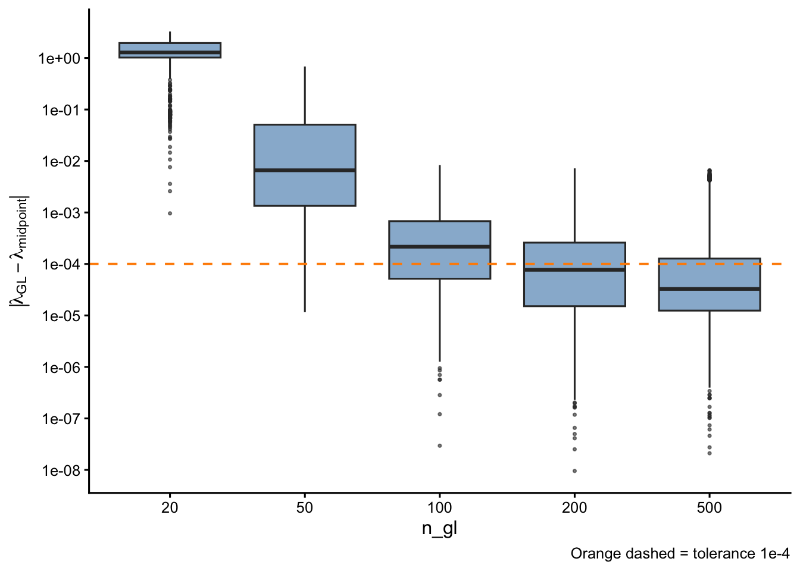
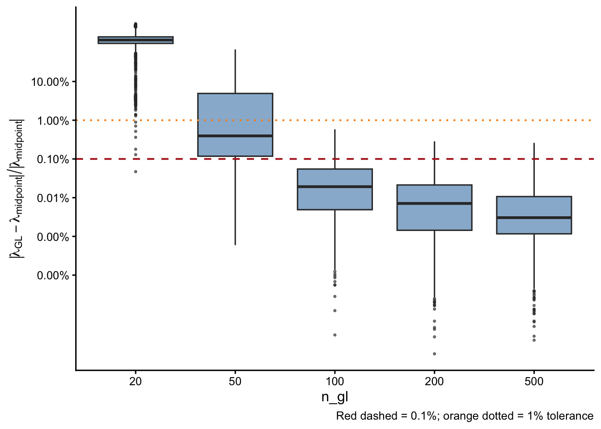
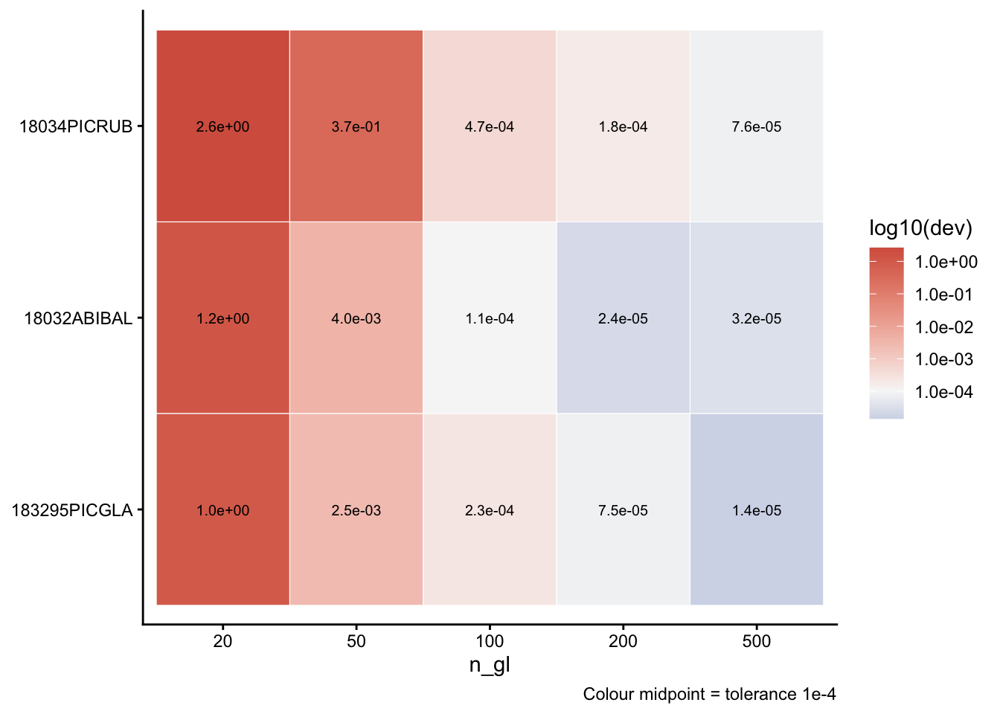
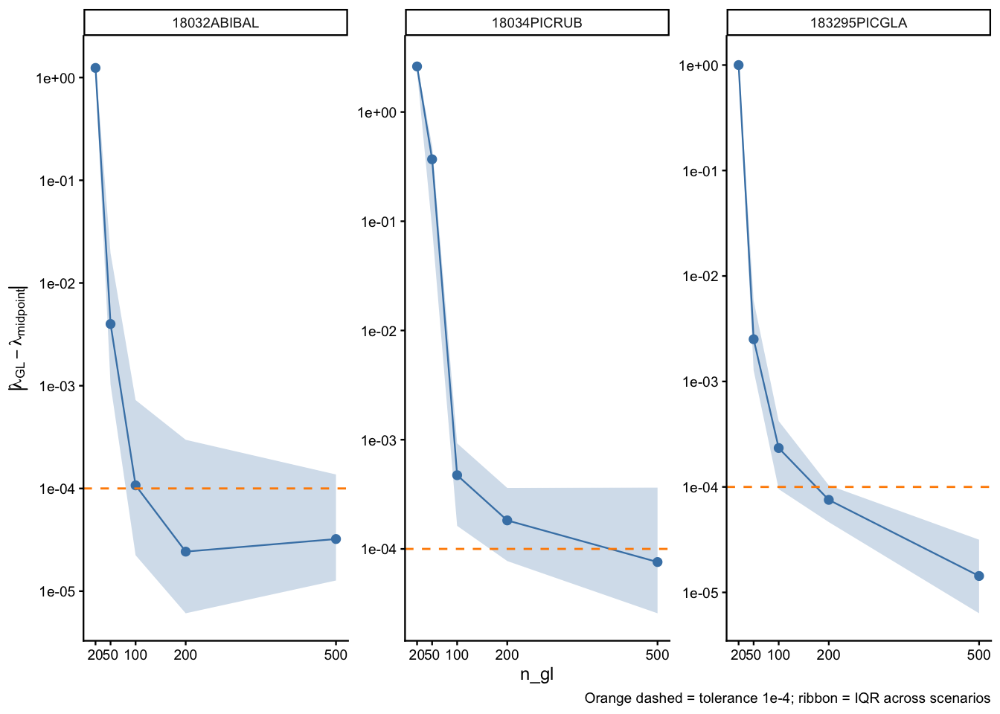
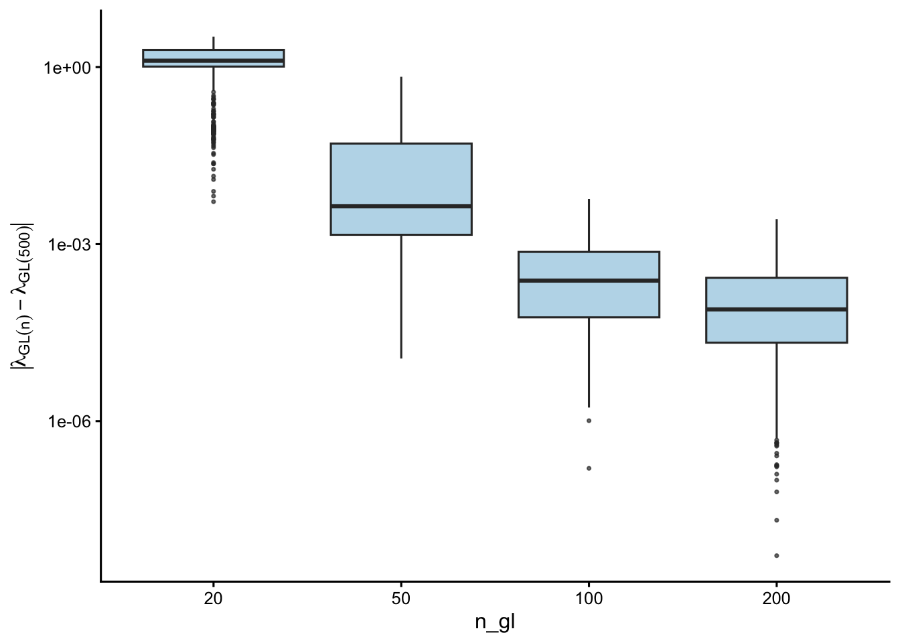
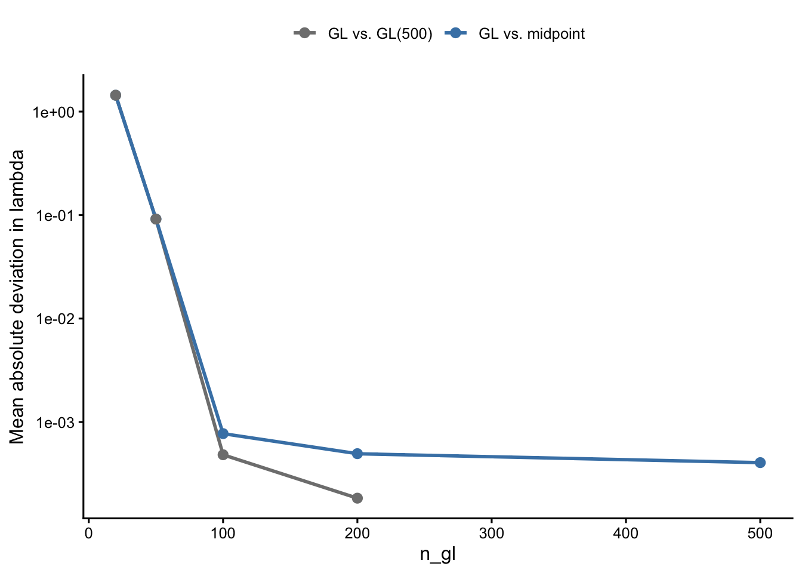
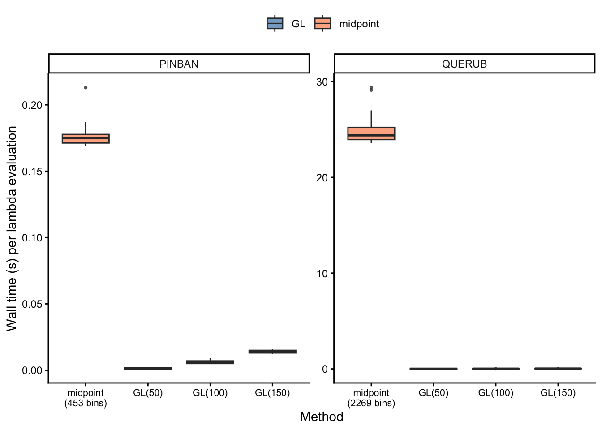

16 Midpoint Rule vs. Gauss-Legendre Quadrature
The release of v1.0.1 of the {forestIPM} R package introduces a new integration approach: the Gauss-Legendre Quadrature. In this chapter, we compare this new approach agains the original midpoint rule.
| Method | Description | Grid | Meshpoints |
|---|---|---|---|
| Midpoint rule | Uniform bins of width \(h = 1\) mm | \([L,\, L_{\max}]\) | \((L_{max} - 127)/h\) |
| Gauss-Legendre (GL) | Optimal quadrature nodes and weights | \(n_{\text{gl}}\) nodes on \([L,\, L_{\max}]\) | \(n_{gl}\) nodes |
The midpoint rule was used in the original cluster simulations (covariates_perturbation) and serves as the historical reference throughout this report. GL quadrature is the new implementation: it places nodes at positions that exactly integrate polynomials of degree \(\leq 2n_{\text{gl}} - 1\), achieving faster convergence for smooth integrands.
In practice, we run this simulation to addresses two questions:
- Accuracy — does GL recover the same \(\lambda\) as the midpoint rule, and at what
n_gl? - Speed — is GL faster than the midpoint rule regardless of species size range?
Simulation design
Results were pre-computed by compare_versions_gl.R:
- 15 stratified environmental scenarios drawn from 216 027 combinations of species × plot × climate.
- 100 Bayesian posterior parameter draws per scenario.
n_gltested: 20, 50, 100, 200, 500.- Reference: midpoint rule (\(h = 1\) mm) from
final_output.RDS. - Metric: dominant eigenvalue \(\lambda\) of the IPM kernel K.
- Tolerance: \(|\lambda_{\text{GL}} - \lambda_{\text{midpoint}}| < 10^{-4}\).
GL accuracy vs. midpoint rule
Absolute deviation from midpoint
Relative deviation from midpoint

Pass/fail at absolute tolerance 1e-4
| n_gl | N draws | Pass (< 1e-4) | % Pass | Max |dev| | Median |dev| |
|---|---|---|---|---|---|
| 20 | 1500 | 0 | 0.0% | 3.28e+00 | 1.28e+00 |
| 50 | 1500 | 13 | 0.9% | 6.86e-01 | 6.60e-03 |
| 100 | 1500 | 529 | 35.3% | 8.35e-03 | 2.16e-04 |
| 200 | 1500 | 840 | 56.0% | 7.19e-03 | 7.69e-05 |
| 500 | 1500 | 1073 | 71.5% | 6.58e-03 | 3.27e-05 |
Per-species deviation heatmap

Per-species convergence profiles
Each panel shows how \(\lambda\) deviation from the midpoint rule evolves as n_gl increases. The ribbon spans the IQR across the 15 scenarios × 100 parameter draws.

GL internal convergence
This section examines convergence within the GL family — how smaller n_gl values compare to GL(500), independent of the midpoint reference.

| n_gl | Median |dev| | Max |dev| |
|---|---|---|
| 20 | 1.28e+00 | 3.28e+00 |
| 50 | 4.37e-03 | 6.86e-01 |
| 100 | 2.41e-04 | 5.83e-03 |
| 200 | 7.82e-05 | 2.65e-03 |
Structural difference: GL vs. midpoint
Even at GL(500) — which is fully converged within the GL family — \(\lambda\) differs systematically from the midpoint rule. The figure below shows this plateau: as n_gl increases, deviation from the midpoint rule does not approach zero.

The plateau arises because GL and midpoint are computing fundamentally different discrete approximations of the same continuous integral. GL uses non-uniform nodes and weights optimised for smooth integrands; the midpoint rule uses uniform spacing. At finite resolution, neither converges to the other — they converge to the same continuous-limit value at different rates.
In practice, switching from midpoint to GL will always produce a step-change in \(\lambda\), regardless of n_gl. This is expected and not a numerical error; it reflects the change in integration scheme.
Computational benchmark
Timing by species and method

Speedup relative to midpoint rule
| Species | Midpt bins | Midpt median(s) | n_gl | GL median(s) | GL min(s) | GL max(s) | Speedup |
|---|---|---|---|---|---|---|---|
| PINBAN | 453 | 0.1750 | 50 | 0.001 | 0.001 | 0.002 | 175.0 |
| PINBAN | 453 | 0.1750 | 100 | 0.006 | 0.005 | 0.009 | 29.2 |
| PINBAN | 453 | 0.1750 | 150 | 0.014 | 0.012 | 0.016 | 12.5 |
| QUERUB | 2269 | 24.3975 | 50 | 0.001 | 0.001 | 0.002 | 24397.5 |
| QUERUB | 2269 | 24.3975 | 100 | 0.007 | 0.007 | 0.010 | 3485.4 |
| QUERUB | 2269 | 24.3975 | 150 | 0.018 | 0.015 | 0.025 | 1355.4 |
Kernel matrix assembly and eigenvalue computation scale as \(\mathcal{O}(n^2)\) and \(\mathcal{O}(n^3)\) respectively, so the reduction in node count from midpoint to GL compounds quickly for large-domain species.
Recommendation
Based on the accuracy analysis (15 scenarios × 100 parameter draws, midpoint h = 1 as reference):
| n_gl | Pass ( | dev | < 1e-4) | Pass (rel < 1%) |
|---|---|---|---|---|
| 20 | 0.0% | 0.5% | 3.28e+00 | Exploration only |
| 50 | 0.9% | 59.5% | 6.86e-01 | Fast screening |
| 100 | 35.3% | 100.0% | 8.35e-03 | good balance |
| 200 | 56.0% | 100.0% | 7.19e-03 | default Production |
| 500 | 71.5% | 100.0% | 6.58e-03 | Reference / validation |
Recommended defaults
- Default production runs:
n_gl = 200— passes the 1e-4 absolute tolerance for 56.0% of draws and is considerably faster than the midpoint rule for large-domain species. - Large-scale screening (100 k+ runs):
n_gl = 100is a viable compromise; see per-species profiles for worst-case species. - Fast exploration:
n_gl = 50is acceptable for qualitative comparisons only.
Note on comparing outputs across methods
Lambda values obtained with GL quadrature cannot be directly compared with historical midpoint-rule results without accounting for the structural step-change between schemes (see Structural difference). For continuity with final_output.RDS, use the midpoint-rule lambda as the reference when reporting changes relative to historical runs.
Methods summary
| Item | Value |
|---|---|
| GL algorithm | Golub-Welsch (Jacobi tridiagonal eigendecomposition) |
| C++ solver | Eigen::SelfAdjointEigenSolver via RcppEigen |
| Size domain | \([127\,\text{mm},\, L_{\max}]\) (species-specific \(L_{\max}\)) |
| Vital rate models | von Bertalanffy growth × logistic survival + log-linear recruitment |
| Metric | Dominant eigenvalue \(\lambda\) of the IPM kernel K |
| Reference | Midpoint rule (\(h = 1\) mm) from final_output.RDS |
n_gl tested |
20, 50, 100, 200, 500 |
| Scenarios | 15 stratified rows from 216 027 combinations |
| Draws per scenario | 100 Bayesian posterior samples |
| Absolute tolerance | \(\|\lambda_{\text{GL}} - \lambda_{\text{midpoint}}\| < 10^{-4}\) |
| Benchmark species | PINBAN (smallest domain), QUERUB (largest domain) |
| Benchmark repetitions | 30 per method per species |